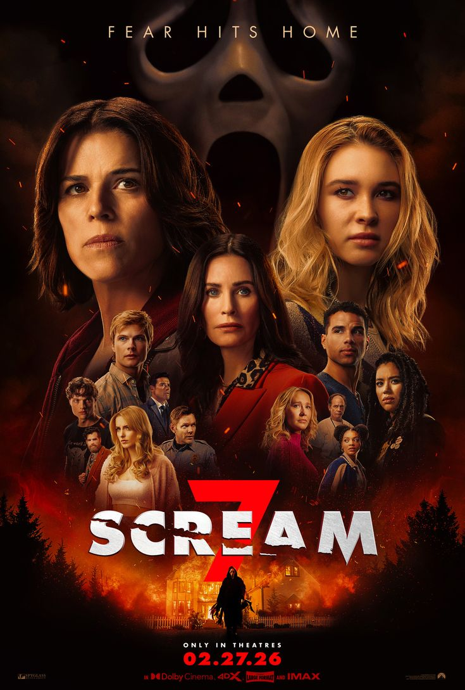
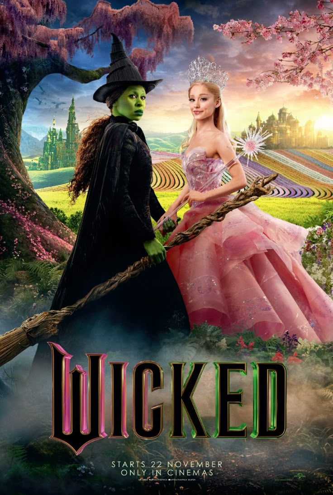
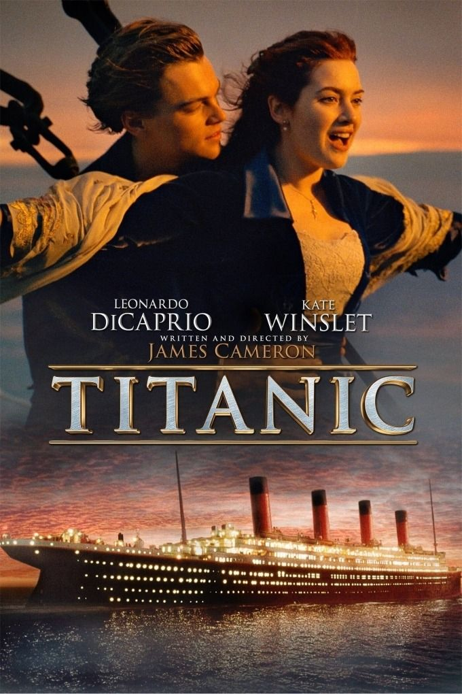
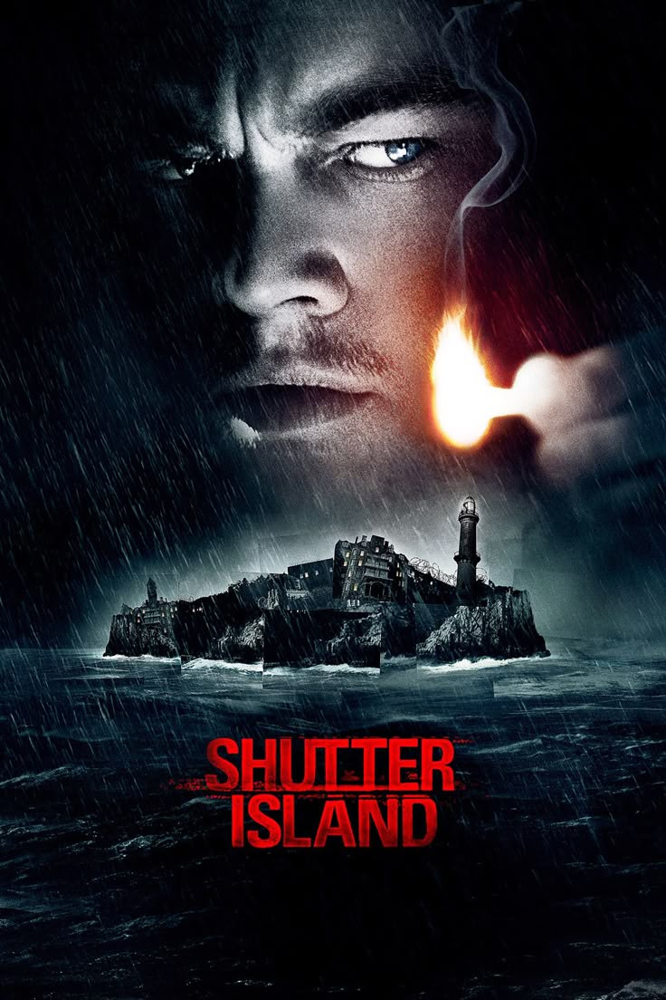
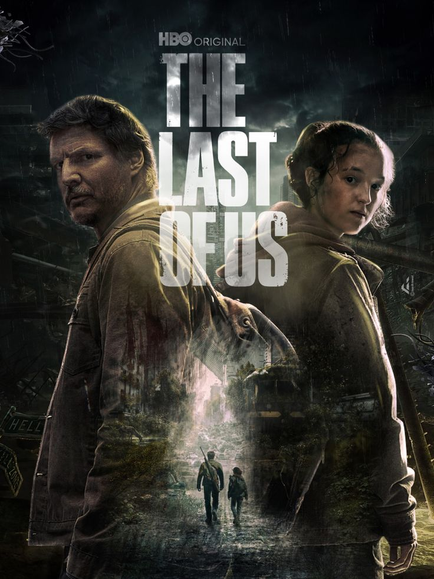
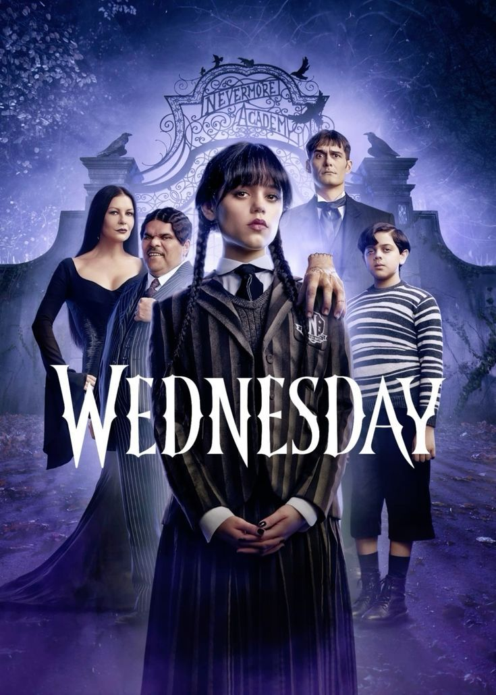
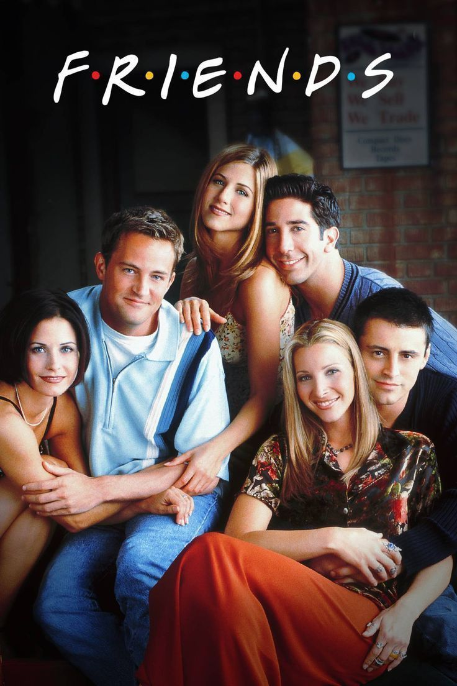
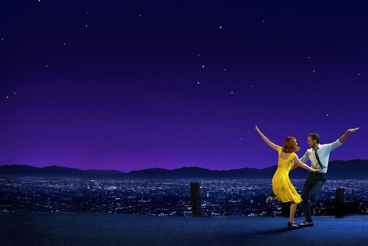
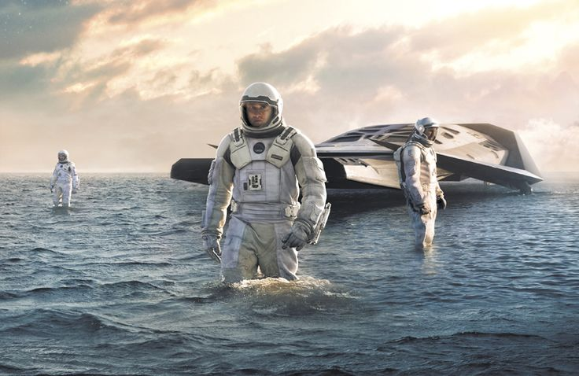

Filmes
Filmes mais assistidos


Clássicos que nunca saem de moda












Spider-Man: Brand New Day
30/07/2026
Vingadores: Doutor Destino
17/12/2026

City of Stars-La La Land

Main Theme-Interestelar